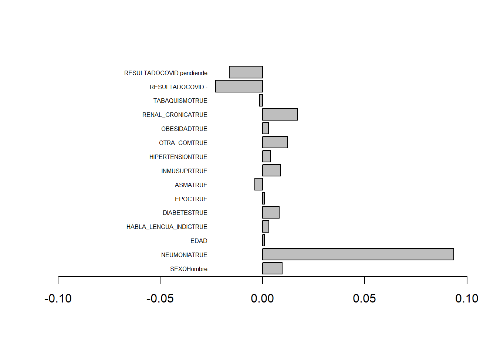
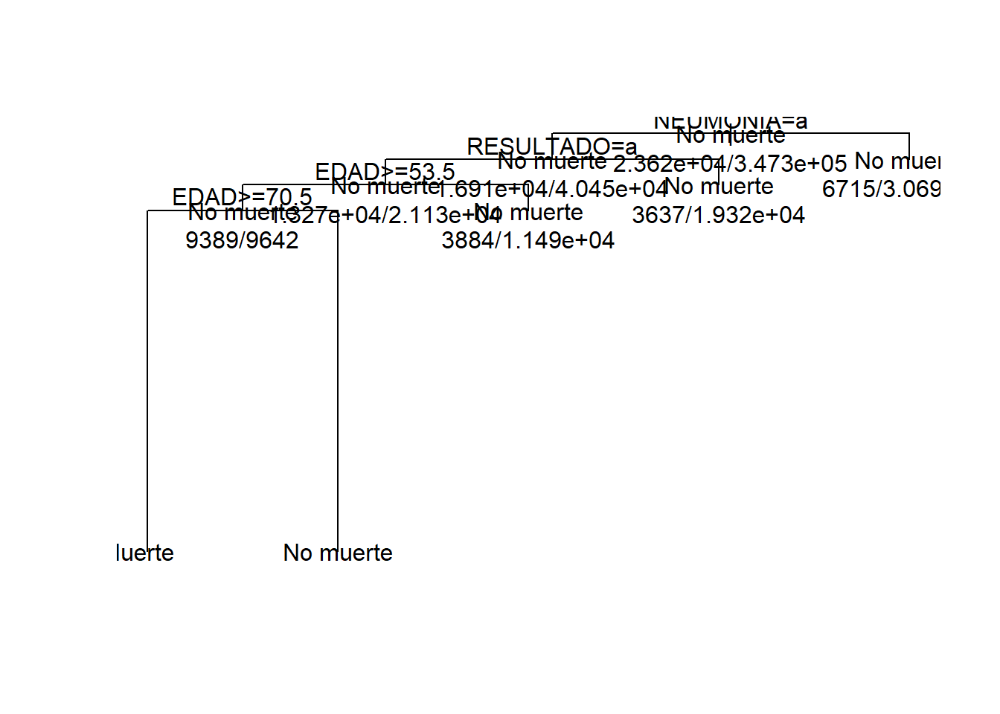

5 Clasificación
Pasos sugeridos
- Preparar la base de datos; base de entrenamiento (trainbd) y de testeo (testbd). 70/30
- Definir el modelo de clasificación * Regresión logística (logit) * Árbol de clasificación (CART) * Naive bayes
Base de datos, se empleara la base de datos de covid de México.
library(dplyr)
covid<-read.csv("C:\\Users\\ALVARO\\Documents\\GitHub\\EST-384\\data\\covid_mx\\200627COVID19MEXICO.csv",sep=",",na.strings = c(99,98))
object.size(covid)/10^6## 123.5 bytesvv<-c("SEXO","FECHA_DEF","NEUMONIA","EDAD","HABLA_LENGUA_INDIG","DIABETES","EPOC","ASMA","INMUSUPR","HIPERTENSION","OTRA_COM","CARDIOVASCULAR","OBESIDAD","RENAL_CRONICA","TABAQUISMO","RESULTADO")
covid<-covid %>% select(vv)## Note: Using an external vector in selections is ambiguous.
## i Use `all_of(vv)` instead of `vv` to silence this message.
## i See <https://tidyselect.r-lib.org/reference/faq-external-vector.html>.
## This message is displayed once per session.## covid
##
## 16 Variables 551052 Observations
## --------------------------------------------------------------------
## SEXO
## n missing distinct Info Mean Gmd
## 551052 0 2 0.75 1.507 0.4999
##
## Value 1 2
## Frequency 271758 279294
## Proportion 0.493 0.507
## --------------------------------------------------------------------
## FECHA_DEF
## n missing distinct
## 551052 0 122
##
## lowest : 2020-01-13 2020-01-14 2020-01-15 2020-01-29 2020-01-30
## highest: 2020-06-24 2020-06-25 2020-06-26 2020-06-27 9999-99-99
## --------------------------------------------------------------------
## NEUMONIA
## n missing distinct Info Mean Gmd
## 551041 11 2 0.394 1.845 0.2624
##
## Value 1 2
## Frequency 85595 465446
## Proportion 0.155 0.845
## --------------------------------------------------------------------
## EDAD
## n missing distinct Info Mean Gmd .05
## 550932 120 118 1 42.59 18.64 19
## .10 .25 .50 .75 .90 .95
## 24 31 41 53 65 73
##
## lowest : 0 1 2 3 4, highest: 116 117 118 119 120
## --------------------------------------------------------------------
## HABLA_LENGUA_INDIG
## n missing distinct Info Mean Gmd
## 533374 17678 2 0.029 1.99 0.01962
##
## Value 1 2
## Frequency 5285 528089
## Proportion 0.01 0.99
## --------------------------------------------------------------------
## DIABETES
## n missing distinct Info Mean Gmd
## 549108 1944 2 0.328 1.875 0.219
##
## Value 1 2
## Frequency 68729 480379
## Proportion 0.125 0.875
## --------------------------------------------------------------------
## EPOC
## n missing distinct Info Mean Gmd
## 549338 1714 2 0.048 1.984 0.03196
##
## Value 1 2
## Frequency 8923 540415
## Proportion 0.016 0.984
## --------------------------------------------------------------------
## ASMA
## n missing distinct Info Mean Gmd
## 549333 1719 2 0.093 1.968 0.06209
##
## Value 1 2
## Frequency 17620 531713
## Proportion 0.032 0.968
## --------------------------------------------------------------------
## INMUSUPR
## n missing distinct Info Mean Gmd
## 549112 1940 2 0.047 1.984 0.0314
##
## Value 1 2
## Frequency 8761 540351
## Proportion 0.016 0.984
## --------------------------------------------------------------------
## HIPERTENSION
## n missing distinct Info Mean Gmd
## 549264 1788 2 0.41 1.837 0.2735
##
## Value 1 2
## Frequency 89795 459469
## Proportion 0.163 0.837
## --------------------------------------------------------------------
## OTRA_COM
## n missing distinct Info Mean Gmd
## 548499 2553 2 0.089 1.97 0.05905
##
## Value 1 2
## Frequency 16702 531797
## Proportion 0.03 0.97
## --------------------------------------------------------------------
## CARDIOVASCULAR
## n missing distinct Info Mean Gmd
## 549266 1786 2 0.066 1.977 0.04433
##
## Value 1 2
## Frequency 12457 536809
## Proportion 0.023 0.977
## --------------------------------------------------------------------
## OBESIDAD
## n missing distinct Info Mean Gmd
## 549307 1745 2 0.41 1.836 0.2736
##
## Value 1 2
## Frequency 89842 459465
## Proportion 0.164 0.836
## --------------------------------------------------------------------
## RENAL_CRONICA
## n missing distinct Info Mean Gmd
## 549299 1753 2 0.059 1.98 0.03911
##
## Value 1 2
## Frequency 10961 538338
## Proportion 0.02 0.98
## --------------------------------------------------------------------
## TABAQUISMO
## n missing distinct Info Mean Gmd
## 549188 1864 2 0.234 1.915 0.156
##
## Value 1 2
## Frequency 46842 502346
## Proportion 0.085 0.915
## --------------------------------------------------------------------
## RESULTADO
## n missing distinct Info Mean Gmd
## 551052 0 3 0.821 1.736 0.688
##
## Value 1 2 3
## Frequency 212802 271151 67099
## Proportion 0.386 0.492 0.122
## --------------------------------------------------------------------## covid
##
## 16 Variables 551052 Observations
## --------------------------------------------------------------------
## SEXO
## n missing distinct Info Mean Gmd
## 551052 0 2 0.75 1.507 0.4999
##
## Value 1 2
## Frequency 271758 279294
## Proportion 0.493 0.507
## --------------------------------------------------------------------
## FECHA_DEF
## n missing distinct
## 551052 0 122
##
## lowest : 2020-01-13 2020-01-14 2020-01-15 2020-01-29 2020-01-30
## highest: 2020-06-24 2020-06-25 2020-06-26 2020-06-27 9999-99-99
## --------------------------------------------------------------------
## NEUMONIA
## n missing distinct Info Mean Gmd
## 551041 11 2 0.394 1.845 0.2624
##
## Value 1 2
## Frequency 85595 465446
## Proportion 0.155 0.845
## --------------------------------------------------------------------
## EDAD
## n missing distinct Info Mean Gmd .05
## 550932 120 118 1 42.59 18.64 19
## .10 .25 .50 .75 .90 .95
## 24 31 41 53 65 73
##
## lowest : 0 1 2 3 4, highest: 116 117 118 119 120
## --------------------------------------------------------------------
## HABLA_LENGUA_INDIG
## n missing distinct Info Mean Gmd
## 533374 17678 2 0.029 1.99 0.01962
##
## Value 1 2
## Frequency 5285 528089
## Proportion 0.01 0.99
## --------------------------------------------------------------------
## DIABETES
## n missing distinct Info Mean Gmd
## 549108 1944 2 0.328 1.875 0.219
##
## Value 1 2
## Frequency 68729 480379
## Proportion 0.125 0.875
## --------------------------------------------------------------------
## EPOC
## n missing distinct Info Mean Gmd
## 549338 1714 2 0.048 1.984 0.03196
##
## Value 1 2
## Frequency 8923 540415
## Proportion 0.016 0.984
## --------------------------------------------------------------------
## ASMA
## n missing distinct Info Mean Gmd
## 549333 1719 2 0.093 1.968 0.06209
##
## Value 1 2
## Frequency 17620 531713
## Proportion 0.032 0.968
## --------------------------------------------------------------------
## INMUSUPR
## n missing distinct Info Mean Gmd
## 549112 1940 2 0.047 1.984 0.0314
##
## Value 1 2
## Frequency 8761 540351
## Proportion 0.016 0.984
## --------------------------------------------------------------------
## HIPERTENSION
## n missing distinct Info Mean Gmd
## 549264 1788 2 0.41 1.837 0.2735
##
## Value 1 2
## Frequency 89795 459469
## Proportion 0.163 0.837
## --------------------------------------------------------------------
## OTRA_COM
## n missing distinct Info Mean Gmd
## 548499 2553 2 0.089 1.97 0.05905
##
## Value 1 2
## Frequency 16702 531797
## Proportion 0.03 0.97
## --------------------------------------------------------------------
## CARDIOVASCULAR
## n missing distinct Info Mean Gmd
## 549266 1786 2 0.066 1.977 0.04433
##
## Value 1 2
## Frequency 12457 536809
## Proportion 0.023 0.977
## --------------------------------------------------------------------
## OBESIDAD
## n missing distinct Info Mean Gmd
## 549307 1745 2 0.41 1.836 0.2736
##
## Value 1 2
## Frequency 89842 459465
## Proportion 0.164 0.836
## --------------------------------------------------------------------
## RENAL_CRONICA
## n missing distinct Info Mean Gmd
## 549299 1753 2 0.059 1.98 0.03911
##
## Value 1 2
## Frequency 10961 538338
## Proportion 0.02 0.98
## --------------------------------------------------------------------
## TABAQUISMO
## n missing distinct Info Mean Gmd
## 549188 1864 2 0.234 1.915 0.156
##
## Value 1 2
## Frequency 46842 502346
## Proportion 0.085 0.915
## --------------------------------------------------------------------
## RESULTADO
## n missing distinct Info Mean Gmd
## 551052 0 3 0.821 1.736 0.688
##
## Value 1 2 3
## Frequency 212802 271151 67099
## Proportion 0.386 0.492 0.122
## --------------------------------------------------------------------#variable muerte
covid<-covid %>% mutate(muerte=(FECHA_DEF!="9999-99-99")) %>% select(-FECHA_DEF)
# valores perdidos
covid<-na.omit(covid)5.1 Logit/Probit
- Se usan para realizar clasificaciones basadas en probabilidades
- Las clasificaciones son del tipo 1/0
- Existen variaciones para clasificar considerando más grupos, empleando el logit y probit ordenado.
5.1.1 Pasos
- Identificar la variable (1/0) que se requiere clasificar, definir covariables para construir el modelos
##
## FALSE TRUE
## 495886 33942##
## 1 2 3
## 205250 260603 63975##
## FALSE TRUE
## 0.9359377 0.0640623##################################################
#a factor (X)
##################################################
#sexo
covid$SEXO<-factor(covid$SEXO,levels=1:2,labels=c("Mujer","Hombre"))
#resultado
covid$RESULTADO<-factor(covid$RESULTADO,levels = 1:3,labels=c("COVID +","COVID -","COVID pendiende"))
covid2<-covid#para cart
#si/no
aux<-c("NEUMONIA","HABLA_LENGUA_INDIG","DIABETES","EPOC","ASMA","INMUSUPR","HIPERTENSION","OTRA_COM","CARDIOVASCULAR","OBESIDAD","RENAL_CRONICA","TABAQUISMO")
for(i in aux){
covid[[i]]<-covid[[i]]==1
}
str(covid)## 'data.frame': 529828 obs. of 16 variables:
## $ SEXO : Factor w/ 2 levels "Mujer","Hombre": 2 2 2 2 2 1 2 1 2 2 ...
## $ NEUMONIA : logi FALSE FALSE TRUE FALSE FALSE FALSE ...
## $ EDAD : int 63 39 62 86 46 40 52 46 73 61 ...
## $ HABLA_LENGUA_INDIG: logi FALSE FALSE FALSE FALSE FALSE FALSE ...
## $ DIABETES : logi FALSE FALSE FALSE FALSE FALSE FALSE ...
## $ EPOC : logi FALSE FALSE FALSE FALSE FALSE FALSE ...
## $ ASMA : logi FALSE FALSE FALSE FALSE FALSE FALSE ...
## $ INMUSUPR : logi FALSE FALSE FALSE FALSE FALSE FALSE ...
## $ HIPERTENSION : logi TRUE FALSE FALSE TRUE FALSE FALSE ...
## $ OTRA_COM : logi FALSE FALSE FALSE FALSE TRUE FALSE ...
## $ CARDIOVASCULAR : logi FALSE FALSE FALSE FALSE FALSE FALSE ...
## $ OBESIDAD : logi TRUE FALSE FALSE FALSE FALSE FALSE ...
## $ RENAL_CRONICA : logi FALSE FALSE FALSE FALSE FALSE FALSE ...
## $ TABAQUISMO : logi FALSE TRUE FALSE FALSE FALSE FALSE ...
## $ RESULTADO : Factor w/ 3 levels "COVID +","COVID -",..: 1 1 1 1 1 1 1 1 1 1 ...
## $ muerte : logi FALSE FALSE TRUE TRUE FALSE FALSE ...
## - attr(*, "na.action")= 'omit' Named int [1:21224] 23 184 230 236 363 642 738 821 832 916 ...
## ..- attr(*, "names")= chr [1:21224] "23" "184" "230" "236" ...## Bases: trainbd, testbd
set.seed(123)
index = sample(1:2, nrow(covid), replace = TRUE, prob=c(0.7, 0.3))
prop.table(table(index))## index
## 1 2
## 0.7001348 0.2998652- Especificar el modelo (logit/probit)
- Identificar las variables significativas
- Construir el modelo con variables significativas
##
## Call:
## glm(formula = muerte ~ ., family = binomial(link = "logit"),
## data = trainbd)
##
## Deviance Residuals:
## Min 1Q Median 3Q Max
## -2.2826 -0.2467 -0.1484 -0.0958 3.8210
##
## Coefficients:
## Estimate Std. Error z value Pr(>|z|)
## (Intercept) -5.943540 0.034244 -173.565 < 2e-16 ***
## SEXOHombre 0.417551 0.016632 25.105 < 2e-16 ***
## NEUMONIATRUE 2.153241 0.016580 129.871 < 2e-16 ***
## EDAD 0.048787 0.000555 87.902 < 2e-16 ***
## HABLA_LENGUA_INDIGTRUE 0.091741 0.064177 1.429 0.1529
## DIABETESTRUE 0.340934 0.018483 18.446 < 2e-16 ***
## EPOCTRUE 0.088726 0.038947 2.278 0.0227 *
## ASMATRUE -0.210955 0.053766 -3.924 8.72e-05 ***
## INMUSUPRTRUE 0.438450 0.046619 9.405 < 2e-16 ***
## HIPERTENSIONTRUE 0.170664 0.018634 9.159 < 2e-16 ***
## OTRA_COMTRUE 0.560317 0.035851 15.629 < 2e-16 ***
## CARDIOVASCULARTRUE -0.033038 0.036994 -0.893 0.3718
## OBESIDADTRUE 0.168902 0.019368 8.721 < 2e-16 ***
## RENAL_CRONICATRUE 0.694676 0.035333 19.661 < 2e-16 ***
## TABAQUISMOTRUE -0.067679 0.028130 -2.406 0.0161 *
## RESULTADOCOVID - -1.193639 0.019311 -61.811 < 2e-16 ***
## RESULTADOCOVID pendiende -1.322945 0.031301 -42.265 < 2e-16 ***
## ---
## Signif. codes: 0 '***' 0.001 '**' 0.01 '*' 0.05 '.' 0.1 ' ' 1
##
## (Dispersion parameter for binomial family taken to be 1)
##
## Null deviance: 175828 on 370950 degrees of freedom
## Residual deviance: 113917 on 370934 degrees of freedom
## AIC: 113951
##
## Number of Fisher Scoring iterations: 7## Start: AIC=113951
## muerte ~ SEXO + NEUMONIA + EDAD + HABLA_LENGUA_INDIG + DIABETES +
## EPOC + ASMA + INMUSUPR + HIPERTENSION + OTRA_COM + CARDIOVASCULAR +
## OBESIDAD + RENAL_CRONICA + TABAQUISMO + RESULTADO
##
## Df Deviance AIC
## - CARDIOVASCULAR 1 113918 113950
## <none> 113917 113951
## - HABLA_LENGUA_INDIG 1 113919 113951
## - EPOC 1 113922 113954
## - TABAQUISMO 1 113923 113955
## - ASMA 1 113933 113965
## - OBESIDAD 1 113992 114024
## - HIPERTENSION 1 114000 114032
## - INMUSUPR 1 114001 114033
## - OTRA_COM 1 114147 114179
## - DIABETES 1 114251 114283
## - RENAL_CRONICA 1 114286 114318
## - SEXO 1 114558 114590
## - RESULTADO 2 119288 119318
## - EDAD 1 122235 122267
## - NEUMONIA 1 132039 132071
##
## Step: AIC=113949.8
## muerte ~ SEXO + NEUMONIA + EDAD + HABLA_LENGUA_INDIG + DIABETES +
## EPOC + ASMA + INMUSUPR + HIPERTENSION + OTRA_COM + OBESIDAD +
## RENAL_CRONICA + TABAQUISMO + RESULTADO
##
## Df Deviance AIC
## <none> 113918 113950
## - HABLA_LENGUA_INDIG 1 113920 113950
## - EPOC 1 113923 113953
## - TABAQUISMO 1 113924 113954
## - ASMA 1 113934 113964
## - OBESIDAD 1 113992 114022
## - HIPERTENSION 1 114000 114030
## - INMUSUPR 1 114002 114032
## - OTRA_COM 1 114147 114177
## - DIABETES 1 114252 114282
## - RENAL_CRONICA 1 114286 114316
## - SEXO 1 114558 114588
## - RESULTADO 2 119305 119333
## - EDAD 1 122283 122313
## - NEUMONIA 1 132039 132069##
## Call:
## glm(formula = muerte ~ SEXO + NEUMONIA + EDAD + HABLA_LENGUA_INDIG +
## DIABETES + EPOC + ASMA + INMUSUPR + HIPERTENSION + OTRA_COM +
## OBESIDAD + RENAL_CRONICA + TABAQUISMO + RESULTADO, family = binomial(link = "logit"),
## data = trainbd)
##
## Deviance Residuals:
## Min 1Q Median 3Q Max
## -2.2927 -0.2468 -0.1484 -0.0958 3.8208
##
## Coefficients:
## Estimate Std. Error z value Pr(>|z|)
## (Intercept) -5.9410055 0.0341197 -174.123 < 2e-16
## SEXOHombre 0.4174567 0.0166315 25.100 < 2e-16
## NEUMONIATRUE 2.1531414 0.0165794 129.869 < 2e-16
## EDAD 0.0487417 0.0005527 88.196 < 2e-16
## HABLA_LENGUA_INDIGTRUE 0.0922789 0.0641685 1.438 0.1504
## DIABETESTRUE 0.3407050 0.0184822 18.434 < 2e-16
## EPOCTRUE 0.0861809 0.0388458 2.219 0.0265
## ASMATRUE -0.2119968 0.0537588 -3.943 8.03e-05
## INMUSUPRTRUE 0.4366807 0.0465812 9.375 < 2e-16
## HIPERTENSIONTRUE 0.1690755 0.0185509 9.114 < 2e-16
## OTRA_COMTRUE 0.5588633 0.0358183 15.603 < 2e-16
## OBESIDADTRUE 0.1680262 0.0193444 8.686 < 2e-16
## RENAL_CRONICATRUE 0.6925070 0.0352532 19.644 < 2e-16
## TABAQUISMOTRUE -0.0685262 0.0281168 -2.437 0.0148
## RESULTADOCOVID - -1.1944962 0.0192888 -61.927 < 2e-16
## RESULTADOCOVID pendiende -1.3231884 0.0313009 -42.273 < 2e-16
##
## (Intercept) ***
## SEXOHombre ***
## NEUMONIATRUE ***
## EDAD ***
## HABLA_LENGUA_INDIGTRUE
## DIABETESTRUE ***
## EPOCTRUE *
## ASMATRUE ***
## INMUSUPRTRUE ***
## HIPERTENSIONTRUE ***
## OTRA_COMTRUE ***
## OBESIDADTRUE ***
## RENAL_CRONICATRUE ***
## TABAQUISMOTRUE *
## RESULTADOCOVID - ***
## RESULTADOCOVID pendiende ***
## ---
## Signif. codes: 0 '***' 0.001 '**' 0.01 '*' 0.05 '.' 0.1 ' ' 1
##
## (Dispersion parameter for binomial family taken to be 1)
##
## Null deviance: 175828 on 370950 degrees of freedom
## Residual deviance: 113918 on 370935 degrees of freedom
## AIC: 113950
##
## Number of Fisher Scoring iterations: 7- Predecir la clase de pertenencia en la base de test (\(prob>0.5\))
- Observar la clasificación dada en base a la probabilidad fijada
## clase
## FALSE TRUE
## 154474 4403## clase
## FALSE TRUE
## 0.97228674 0.02771326- Comparar lo observado y lo predicho (testbd)
## clase
## FALSE TRUE
## FALSE 146637 1923
## TRUE 7837 2480- Generar la matriz de confusión (librería caret)
##
## Attaching package: 'caret'## The following object is masked from 'package:vegan':
##
## tolerance## The following object is masked from 'package:survival':
##
## cluster## Confusion Matrix and Statistics
##
## clase
## FALSE TRUE
## FALSE 146637 1923
## TRUE 7837 2480
##
## Accuracy : 0.9386
## 95% CI : (0.9374, 0.9397)
## No Information Rate : 0.9723
## P-Value [Acc > NIR] : 1
##
## Kappa : 0.3102
##
## Mcnemar's Test P-Value : <2e-16
##
## Sensitivity : 0.9493
## Specificity : 0.5633
## Pos Pred Value : 0.9871
## Neg Pred Value : 0.2404
## Prevalence : 0.9723
## Detection Rate : 0.9230
## Detection Prevalence : 0.9351
## Balanced Accuracy : 0.7563
##
## 'Positive' Class : FALSE
## ## clase
## FALSE TRUE
## FALSE 146637 1923
## TRUE 7837 2480## [1] 0.9385688Efectos marginales
## Loading required package: sandwich## Loading required package: lmtest## Loading required package: zoo##
## Attaching package: 'zoo'## The following objects are masked from 'package:base':
##
## as.Date, as.Date.numeric## Loading required package: MASS##
## Attaching package: 'MASS'## The following object is masked from 'package:dplyr':
##
## select## Loading required package: betareginfo<-logitmfx(formula(m2),data=testbd)
barplot(info$mfxest[,1],horiz = T,las=1,cex.names = 0.5,xlim=c(-0.1,0.1),pos=-0.02)## Warning in plot.window(xlim, ylim, log = log, ...): "pos" is not a
## graphical parameter## Warning in title(main = main, sub = sub, xlab = xlab, ylab =
## ylab, ...): "pos" is not a graphical parameter
5.2 Arboles de clasificación (CART)
El método CART uso condiciones basadas en cortes sobre covariables para realizar la clasificación (predicción) de una clase. El proceso de clasificación comienza desde el nodo raíz del árbol; en cada nodo, el proceso verificará si el valor de entrada debe continuar de forma recursiva hacia la sub-rama derecha o izquierda de acuerdo con la condición de división, y se detiene al encontrar cualquier nodo hoja (terminal) del árbol de decisión.
5.2.1 Pasos
Crear el modelo de clasificación
- Cargar la librería rpart
- Usar la función rpart para construir el modelo de clasificación
covid2$muerte<-factor(covid2$muerte,c(T,F),labels = c("Muerte","No muerte"))
#si/no
aux<-c("NEUMONIA","HABLA_LENGUA_INDIG","DIABETES","EPOC","ASMA","INMUSUPR","HIPERTENSION","OTRA_COM","CARDIOVASCULAR","OBESIDAD","RENAL_CRONICA","TABAQUISMO")
for(i in aux){
covid2[[i]]<-factor(covid2[[i]],1:2,c("SI","NO"))
}
str(covid2)## 'data.frame': 529828 obs. of 16 variables:
## $ SEXO : Factor w/ 2 levels "Mujer","Hombre": 2 2 2 2 2 1 2 1 2 2 ...
## $ NEUMONIA : Factor w/ 2 levels "SI","NO": 2 2 1 2 2 2 2 2 2 2 ...
## $ EDAD : int 63 39 62 86 46 40 52 46 73 61 ...
## $ HABLA_LENGUA_INDIG: Factor w/ 2 levels "SI","NO": 2 2 2 2 2 2 2 2 2 2 ...
## $ DIABETES : Factor w/ 2 levels "SI","NO": 2 2 2 2 2 2 2 2 1 2 ...
## $ EPOC : Factor w/ 2 levels "SI","NO": 2 2 2 2 2 2 2 2 2 2 ...
## $ ASMA : Factor w/ 2 levels "SI","NO": 2 2 2 2 2 2 2 2 2 2 ...
## $ INMUSUPR : Factor w/ 2 levels "SI","NO": 2 2 2 2 2 2 2 2 2 2 ...
## $ HIPERTENSION : Factor w/ 2 levels "SI","NO": 1 2 2 1 2 2 2 2 2 2 ...
## $ OTRA_COM : Factor w/ 2 levels "SI","NO": 2 2 2 2 1 2 2 1 2 2 ...
## $ CARDIOVASCULAR : Factor w/ 2 levels "SI","NO": 2 2 2 2 2 2 2 1 2 2 ...
## $ OBESIDAD : Factor w/ 2 levels "SI","NO": 1 2 2 2 2 2 2 1 2 2 ...
## $ RENAL_CRONICA : Factor w/ 2 levels "SI","NO": 2 2 2 2 2 2 2 2 2 2 ...
## $ TABAQUISMO : Factor w/ 2 levels "SI","NO": 2 1 2 2 2 2 2 2 2 2 ...
## $ RESULTADO : Factor w/ 3 levels "COVID +","COVID -",..: 1 1 1 1 1 1 1 1 1 1 ...
## $ muerte : Factor w/ 2 levels "Muerte","No muerte": 2 2 1 1 2 2 2 2 2 2 ...
## - attr(*, "na.action")= 'omit' Named int [1:21224] 23 184 230 236 363 642 738 821 832 916 ...
## ..- attr(*, "names")= chr [1:21224] "23" "184" "230" "236" ...## Bases: trainbd, testbd
set.seed(123)
index = sample(1:2, nrow(covid2), replace = TRUE, prob=c(0.7, 0.3))
prop.table(table(index))## index
## 1 2
## 0.7001348 0.2998652- Explorar los nodos creados por rpart
## n= 370951
##
## node), split, n, loss, yval, (yprob)
## * denotes terminal node
##
## 1) root 370951 23625 No muerte (0.06368766 0.93631234)
## 2) NEUMONIA=SI 57361 16910 No muerte (0.29479960 0.70520040)
## 4) RESULTADO=COVID + 34405 13273 No muerte (0.38578695 0.61421305)
## 8) EDAD>=53.5 19031 9389 No muerte (0.49335295 0.50664705)
## 16) EDAD>=70.5 5880 2392 Muerte (0.59319728 0.40680272) *
## 17) EDAD< 70.5 13151 5901 No muerte (0.44871112 0.55128888) *
## 9) EDAD< 53.5 15374 3884 No muerte (0.25263432 0.74736568) *
## 5) RESULTADO=COVID -,COVID pendiende 22956 3637 No muerte (0.15843353 0.84156647) *
## 3) NEUMONIA=NO 313590 6715 No muerte (0.02141331 0.97858669) *- Examinar los parámetros del árbol con printcp
##
## Classification tree:
## rpart(formula = muerte ~ ., data = trainbd)
##
## Variables actually used in tree construction:
## [1] EDAD NEUMONIA RESULTADO
##
## Root node error: 23625/370951 = 0.063688
##
## n= 370951
##
## CP nsplit rel error xerror xstd
## 1 0.011598 0 1.00000 1.00000 0.0062954
## 2 0.010000 4 0.95361 0.95712 0.0061679- Usar el comando plotcp para explorar los parámetros de forma gráfica
- Usar la función summary para para examinar el modelo
## Call:
## rpart(formula = muerte ~ ., data = trainbd)
## n= 370951
##
## CP nsplit rel error xerror xstd
## 1 0.01159788 0 1.0000000 1.0000000 0.006295416
## 2 0.01000000 4 0.9536085 0.9571217 0.006167944
##
## Variable importance
## NEUMONIA RESULTADO EDAD HIPERTENSION
## 71 14 12 1
##
## Node number 1: 370951 observations, complexity param=0.01159788
## predicted class=No muerte expected loss=0.06368766 P(node) =1
## class counts: 23625 347326
## probabilities: 0.064 0.936
## left son=2 (57361 obs) right son=3 (313590 obs)
## Primary splits:
## NEUMONIA splits as LR, improve=7248.462, (0 missing)
## EDAD < 59.5 to the right, improve=3639.660, (0 missing)
## RESULTADO splits as LRR, improve=1637.404, (0 missing)
## DIABETES splits as LR, improve=1577.347, (0 missing)
## HIPERTENSION splits as LR, improve=1435.096, (0 missing)
##
## Node number 2: 57361 observations, complexity param=0.01159788
## predicted class=No muerte expected loss=0.2947996 P(node) =0.1546323
## class counts: 16910 40451
## probabilities: 0.295 0.705
## left son=4 (34405 obs) right son=5 (22956 obs)
## Primary splits:
## RESULTADO splits as LRR, improve=1423.42300, (0 missing)
## EDAD < 51.5 to the right, improve=1349.04200, (0 missing)
## HIPERTENSION splits as LR, improve= 348.47780, (0 missing)
## DIABETES splits as LR, improve= 277.58260, (0 missing)
## SEXO splits as RL, improve= 79.91938, (0 missing)
## Surrogate splits:
## EDAD < 30.5 to the right, agree=0.630, adj=0.075, (0 split)
## INMUSUPR splits as RL, agree=0.606, adj=0.016, (0 split)
## OTRA_COM splits as RL, agree=0.604, adj=0.011, (0 split)
## CARDIOVASCULAR splits as RL, agree=0.601, adj=0.004, (0 split)
## EPOC splits as RL, agree=0.601, adj=0.003, (0 split)
##
## Node number 3: 313590 observations
## predicted class=No muerte expected loss=0.02141331 P(node) =0.8453677
## class counts: 6715 306875
## probabilities: 0.021 0.979
##
## Node number 4: 34405 observations, complexity param=0.01159788
## predicted class=No muerte expected loss=0.3857869 P(node) =0.0927481
## class counts: 13273 21132
## probabilities: 0.386 0.614
## left son=8 (19031 obs) right son=9 (15374 obs)
## Primary splits:
## EDAD < 53.5 to the right, improve=985.54470, (0 missing)
## HIPERTENSION splits as LR, improve=272.12220, (0 missing)
## DIABETES splits as LR, improve=176.00640, (0 missing)
## RENAL_CRONICA splits as LR, improve= 81.22588, (0 missing)
## EPOC splits as LR, improve= 49.57093, (0 missing)
## Surrogate splits:
## HIPERTENSION splits as LR, agree=0.613, adj=0.134, (0 split)
## DIABETES splits as LR, agree=0.571, adj=0.040, (0 split)
## ASMA splits as RL, agree=0.555, adj=0.003, (0 split)
##
## Node number 5: 22956 observations
## predicted class=No muerte expected loss=0.1584335 P(node) =0.06188418
## class counts: 3637 19319
## probabilities: 0.158 0.842
##
## Node number 8: 19031 observations, complexity param=0.01159788
## predicted class=No muerte expected loss=0.493353 P(node) =0.05130327
## class counts: 9389 9642
## probabilities: 0.493 0.507
## left son=16 (5880 obs) right son=17 (13151 obs)
## Primary splits:
## EDAD < 70.5 to the right, improve=169.651200, (0 missing)
## RENAL_CRONICA splits as LR, improve= 16.279480, (0 missing)
## SEXO splits as RL, improve= 14.015200, (0 missing)
## HIPERTENSION splits as LR, improve= 12.010110, (0 missing)
## DIABETES splits as LR, improve= 6.505036, (0 missing)
## Surrogate splits:
## EPOC splits as LR, agree=0.692, adj=0.003, (0 split)
##
## Node number 9: 15374 observations
## predicted class=No muerte expected loss=0.2526343 P(node) =0.04144483
## class counts: 3884 11490
## probabilities: 0.253 0.747
##
## Node number 16: 5880 observations
## predicted class=Muerte expected loss=0.4068027 P(node) =0.01585115
## class counts: 3488 2392
## probabilities: 0.593 0.407
##
## Node number 17: 13151 observations
## predicted class=No muerte expected loss=0.4487111 P(node) =0.03545212
## class counts: 5901 7250
## probabilities: 0.449 0.551Visualizar el árbol
- Usar la función plot y text(,all=T, n=T)


- Ajustes en el layout plot(…,uniform=TRUE, branch=0.6, margin=0.1)

Predicción de la clasificación
- predict(…, testbd, type=“class”), predicción sobre la base de test
- Elaborar una tabla de contingencia de la clasificación
##
## clase Muerte No muerte
## Muerte 1526 1066
## No muerte 8791 147494- Emplear el comando confusionMatrix sobre la tabla del paso anterior, para evaluar la calidad de la clasificación. Mcnemar’s Test H0: \(ij=ji\)
## Confusion Matrix and Statistics
##
##
## clase Muerte No muerte
## Muerte 1526 1066
## No muerte 8791 147494
##
## Accuracy : 0.938
## 95% CI : (0.9368, 0.9391)
## No Information Rate : 0.9351
## P-Value [Acc > NIR] : 1.24e-06
##
## Kappa : 0.216
##
## Mcnemar's Test P-Value : < 2.2e-16
##
## Sensitivity : 0.147911
## Specificity : 0.992824
## Pos Pred Value : 0.588735
## Neg Pred Value : 0.943750
## Prevalence : 0.064937
## Detection Rate : 0.009605
## Detection Prevalence : 0.016315
## Balanced Accuracy : 0.570368
##
## 'Positive' Class : Muerte
## 5.2.2 Proceso de pruning (podado)
El objetivo es eliminar variables redundantes y crear un modelo de clasificación mas robusto
Pasos:
- Encuentre el valor mínimo en cross-validation error. (xerror)
## [1] 0.9571217- Encontrar el registro que contiene el valor del anterior paso. (which.min, cptable)
## 2
## 2- Obtenga el “cost complexity parameter” del valor mínimo encontrado (CP)
- Realizar el podado con la función prune, empleando el modelo original y el CP del valor mínimo en xerror (paso anterior)
- Visualice el nuevo árbol
- Realice la predicción a partir del árbol podado
- Evalúe los resultados con la matriz de confusión
## Confusion Matrix and Statistics
##
##
## clase Muerte No muerte
## Muerte 1526 1066
## No muerte 8791 147494
##
## Accuracy : 0.938
## 95% CI : (0.9368, 0.9391)
## No Information Rate : 0.9351
## P-Value [Acc > NIR] : 1.24e-06
##
## Kappa : 0.216
##
## Mcnemar's Test P-Value : < 2.2e-16
##
## Sensitivity : 0.147911
## Specificity : 0.992824
## Pos Pred Value : 0.588735
## Neg Pred Value : 0.943750
## Prevalence : 0.064937
## Detection Rate : 0.009605
## Detection Prevalence : 0.016315
## Balanced Accuracy : 0.570368
##
## 'Positive' Class : Muerte
## 5.3 Naive Bayes
Es un modelo basado en probabilidad, su base teórica aplica el teorema de Bayes (fuerte supuesto de independencia).
nota
\[P(muerte/edad,neumonia, ...)<>P(\sim muerte/edad,neumonia,...)\]
\[P(C/X)=\frac{P(C)*P(X/C)}{P(X)}\] * \(P(C/X)\) Probabilidad Posterior * \(P(C)\) Probabilidad a Priori * \(P(X/C)\) Verosimilitud * \(P(X)\) Marginal
Si se tiene varios predictores (\(X\)) se supone independencia, esto es:
\[P(C/X) = \frac{P(X_1/C)*P(X_2/C)*\ldots *P(X_n/C)*P(C)}{P(X)}\] Pasos,
- Cargar la librería e1071 y emplear la función naiveBayes para construir el clasificador
##
## Attaching package: 'e1071'## The following object is masked from 'package:Hmisc':
##
## impute- Explorar los resultados
##
## Naive Bayes Classifier for Discrete Predictors
##
## Call:
## naiveBayes.default(x = X, y = Y, laplace = laplace)
##
## A-priori probabilities:
## Y
## Muerte No muerte
## 0.06368766 0.93631234
##
## Conditional probabilities:
## SEXO
## Y Mujer Hombre
## Muerte 0.3555979 0.6444021
## No muerte 0.5035557 0.4964443
##
## NEUMONIA
## Y SI NO
## Muerte 0.7157672 0.2842328
## No muerte 0.1164641 0.8835359
##
## EDAD
## Y [,1] [,2]
## Muerte 60.72085 15.39476
## No muerte 41.36145 15.96892
##
## HABLA_LENGUA_INDIG
## Y SI NO
## Muerte 0.016973545 0.983026455
## No muerte 0.009319775 0.990680225
##
## DIABETES
## Y SI NO
## Muerte 0.3657143 0.6342857
## No muerte 0.1093756 0.8906244
##
## EPOC
## Y SI NO
## Muerte 0.05633862 0.94366138
## No muerte 0.01340239 0.98659761
##
## ASMA
## Y SI NO
## Muerte 0.02065608 0.97934392
## No muerte 0.03285674 0.96714326
##
## INMUSUPR
## Y SI NO
## Muerte 0.03695238 0.96304762
## No muerte 0.01445040 0.98554960
##
## HIPERTENSION
## Y SI NO
## Muerte 0.4201905 0.5798095
## No muerte 0.1468937 0.8531063
##
## OTRA_COM
## Y SI NO
## Muerte 0.06319577 0.93680423
## No muerte 0.02848621 0.97151379
##
## CARDIOVASCULAR
## Y SI NO
## Muerte 0.06209524 0.93790476
## No muerte 0.02006184 0.97993816
##
## OBESIDAD
## Y SI NO
## Muerte 0.2331429 0.7668571
## No muerte 0.1587586 0.8412414
##
## RENAL_CRONICA
## Y SI NO
## Muerte 0.07737566 0.92262434
## No muerte 0.01606272 0.98393728
##
## TABAQUISMO
## Y SI NO
## Muerte 0.09337566 0.90662434
## No muerte 0.08453154 0.91546846
##
## RESULTADO
## Y COVID + COVID - COVID pendiende
## Muerte 0.74666667 0.19538624 0.05794709
## No muerte 0.36288674 0.51135245 0.12576081- Predecir los resultados en la base de testeo
- Realizar la matriz de confusión
## Confusion Matrix and Statistics
##
##
## clase Muerte No muerte
## Muerte 5465 8007
## No muerte 4852 140553
##
## Accuracy : 0.9191
## 95% CI : (0.9177, 0.9204)
## No Information Rate : 0.9351
## P-Value [Acc > NIR] : 1
##
## Kappa : 0.4165
##
## Mcnemar's Test P-Value : <2e-16
##
## Sensitivity : 0.52971
## Specificity : 0.94610
## Pos Pred Value : 0.40566
## Neg Pred Value : 0.96663
## Prevalence : 0.06494
## Detection Rate : 0.03440
## Detection Prevalence : 0.08480
## Balanced Accuracy : 0.73791
##
## 'Positive' Class : Muerte
## 5.4 Ejercicios.
- Usando la ENDSA para un año en particular, defina clases de violencia en base a las variables de violencia y aplique los métodos de clasificación con las variables que considere relevante.
- Usando la Encuesta a hogares, para la clase nivel de educación (ninguno, primaria, secundaria, superior) aplique los métodos de clasificación considerando las variables relevantes.